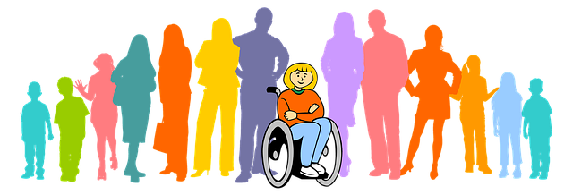

история и защо създадохме този сайт
Конвенцията на ООН за правата на детето е приета от ОС на ООН на 20.11.1989 г. България ратифицира Конвенцията с решение на ВНС от 11.04.1991 г.
През 2017 година България се присединява към Европейската Агенция за специални нужди и приобщаващо образование.
През същата година децата, за които се твърди че посещават училище с ресурсно подпомагане или масова детска
градина са близо 17 000.
(по данни от Уикипедия
)
Страниците на този сайт предалгат в обобщена форма поглед върху това какво е приобщаващото образование и как то се осъществява у нас.
в момента
В момента, по данни от страницата на УНИЦЕФ България:
Предполагаемият брой на децата с увреждания и затруднения в развитието е около 32 000, въпреки че няма пълни данни за точния им брой в страната.
През последното десетилетие бяха затворени всички домове за деца с увреждания и половината от Домовете за медико-социални грижи, което доведе до значително намаляване на броя на децата в институционална грижа — от 7 587 през 2010 г. до 633 в края на 2018 г.[4]
С приетия в края на 2015 г. Закон за предучилищното и училищно образование бяха създадени условия за приобщаване на децата с увреждания в общата образователна система. През учебната 2018 – 2019 г. 22,035 деца с увреждания и специални потребности посещават училища и детски градини.
Въпреки националните усилия обаче децата с увреждания продължават да са една от най-изолираните и невидими групи в обществото. При тях има повишен риск от раздяла от биологичните си семейства, по-голяма вероятност да живеят в институционални грижи или да останат извън училище или детска градина. Според данните за 2018 г. около 90% от всички деца в Домовете за медико-социални грижи за деца [5] и 50% от децата в Центровете за настаняване от семеен тип са с увреждания. Приблизителният брой на децата с увреждания, които не посещават училище, е около 10 000. Освен това има данни, че много от младежите с увреждания на възраст между 15 и 24 г. не са заети с работа, учене или обучение.